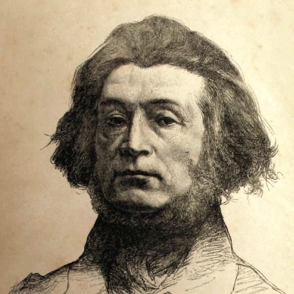

Adam Mickiewicz

Adam Bernard Mickiewicz (ur. 24 grudnia 1798 w Zaosiu lub Nowogródku, zm. 26 listopada 1855 w Stambule) – polski poeta, działacz polityczny, publicysta, tłumacz, filozof, działacz religijny, mistyk, organizator i dowódca wojskowy, nauczyciel akademicki.
Obok Juliusza Słowackiego i Zygmunta Krasińskiego uważany za największego poetę polskiego romantyzmu (zaliczany do grona tzw. Trzech Wieszczów) oraz literatury polskiej, a nawet za jednego z największych na skalę europejską. Określany też przez innych, jako poeta przeobrażeń[6] oraz bard słowiański[7].
Powrót do strony głównej